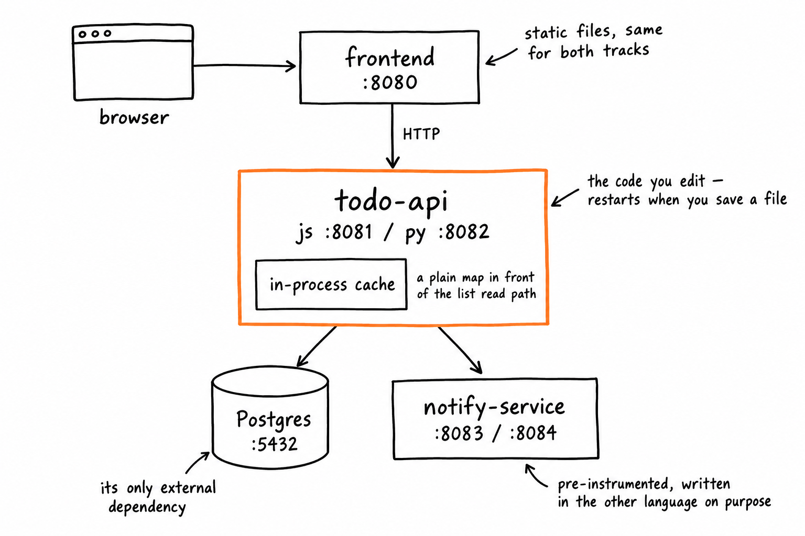

Módulo 1: La Aplicación que Vas a Instrumentar
Duración: ~15 min · Los dos tracks, la misma aplicación
No puedes instrumentar un sistema que no entiendes. Este módulo es un recorrido guiado por la app de tareas: qué piezas tiene, qué hace la API y — lo más importante — el puñado de funciones a las que vas a volver en todos los módulos siguientes. 🗺️
Objetivos de Aprendizaje
Al terminar este módulo, serás capaz de:
- Dibujar el sistema de memoria: qué servicio llama a cuál, y por dónde
- Enumerar todos los endpoints que expone la API y qué toca cada uno
- Conocer los cuatro ficheros de tu track que vas a editar todo el día, y qué vive en cada uno
Prerrequisitos
- Módulo 0 completado,
./doctor.shen verde - Tu track elegido, y el selector de track de arriba puesto en él
El sistema

Cuatro cosas que merece la pena notar:
todo-apies lo único que editas. Corre en un contenedornode:22-slimopython:3.12-slimde serie, con el directorio de código de tu portátil montado dentro y el servidor en modo vigilancia — así tu editor edita ficheros de verdad, y guardar uno es todo el ciclo de construir y desplegar. Todo lo demás es decorado fijo.- Postgres es su única dependencia externa. La caché que hay delante del camino de lectura es un map en memoria, no Redis. Recuérdalo: nada en la red puede observarla, y eso resulta importar bastante más adelante.
notify-serviceestá escrito en el otro lenguaje respecto a tu track. Es deliberado. Viene en los dos lenguajes, y tu track llama al que está escrito en el lenguaje contrario — el track de JS llama a la implementación en Python en:8083, y el de Python a la de JavaScript en:8084. Los dos reportan unservice.namedenotify-service, así que todas las consultas de estos guiones funcionan igual en ambos casos. En el Módulo 7 harás que una sola traza atraviese los dos servicios y los dos lenguajes, y ahí es cuando el “OTel es un protocolo, no una librería” deja de ser abstracto../loadgen.shmantiene el tráfico, así siempre hay algo que mirar. Ejecuta./loadgen.sh 2mcuando las gráficas se queden quietas.
La API
| Método | Ruta | Qué hace | Toca |
|---|---|---|---|
GET |
/healthz |
Sonda de vida | nada |
GET |
/lists |
Todas las listas con sus contadores | Postgres |
GET |
/todos?list=<nombre> |
Todos de una lista | Postgres, caché |
GET |
/todos/:id |
Un todo | Postgres |
POST |
/todos |
Crea un todo | Postgres, notify-service |
PATCH |
/todos/:id/complete |
Marca un todo como completado | Postgres, caché |
DELETE |
/todos/:id |
Borra un todo | Postgres, caché |
GET |
/stats |
Contadores resumen para el dashboard | Postgres, notify-service |
Un todo tiene esta pinta:
{
"id": "0f2c6b1e-8a7d-4f2b-9c31-0a5e6d7b8c90",
"title": "Renovar el certificado TLS",
"list": "work",
"tags": ["urgent", "infra"],
"priority": 2,
"due_at": "2026-09-05T09:00:00Z",
"created_at": "2026-09-01T08:12:44Z",
"completed_at": null
}
Dos comportamientos conviene saberlos desde ya, porque condicionan la telemetría:
- Un todo con la etiqueta
urgentdispara una llamada anotify-serviceal crearse. Los que no la llevan, no. - Las lecturas de listas pasan primero por la caché en proceso, y caen a Postgres si fallan.
El código
Node.js / Express
track-js/todo-api/
├── package.json
└── src/
├── server.js # app express, middleware, rutas, arranque
├── routes/todos.js # ◀ los handlers — es lo que más vas a editar
├── repo.js # ◀ todo el acceso a Postgres
├── cache.js # ◀ la caché en proceso
├── notify.js # ◀ el cliente de notify-service
├── enrich.js # lógica de negocio de etiquetas y prioridad
└── log.js # el logger pino
Los cuatro ficheros marcados con ◀ son donde ocurre prácticamente todo tu trabajo.
src/server.js — Express pelado, sin sorpresas. Fíjate en que no hay configuración de telemetría por ninguna parte. Ese es el punto de partida:
const express = require('express');
const { todosRouter } = require('./routes/todos.js');
const app = express();
app.use(express.json());
app.get('/healthz', (_req, res) => res.json({ ok: true }));
app.use(todosRouter);
app.listen(8081, () => log.info('todo-api listening on 8081'));
src/routes/todos.js — los handlers. Estos dos son a los que vas a volver en los Módulos 5, 6 y 7:
todosRouter.post('/todos', async (req, res) => {
const todo = await createTodo(req.body); // repo.js
const enriched = await enrich(todo); // enrich.js
if (todo.tags.includes('urgent')) {
await notifyUrgent(enriched); // notify.js → :8083
}
await invalidate(todo.list); // cache.js
log.info('todo created ' + todo.id); // log.js
res.status(201).json(enriched);
});
todosRouter.patch('/todos/:id/complete', async (req, res) => {
const todo = await completeTodo(req.params.id); // repo.js
await invalidate(todo.list); // cache.js
res.json(todo);
});
Python / Flask
track-py/todo-api/
├── requirements.txt
├── app.py # factoría flask, blueprints, arranque
└── todo_api/
├── routes.py # ◀ los handlers — es lo que más vas a editar
├── repo.py # ◀ todo el acceso a Postgres
├── cache.py # ◀ la caché en proceso
├── notify.py # ◀ el cliente de notify-service
├── enrich.py # lógica de negocio de etiquetas y prioridad
└── log.py # el logger de la stdlib
Los cuatro ficheros marcados con ◀ son donde ocurre prácticamente todo tu trabajo.
app.py — Flask pelado, sin sorpresas. Fíjate en que no hay configuración de telemetría por ninguna parte. Ese es el punto de partida:
from flask import Flask, jsonify
from todo_api.routes import bp
def create_app():
app = Flask(__name__)
app.register_blueprint(bp)
@app.get("/healthz")
def healthz():
return jsonify(ok=True)
return app
app = create_app()
todo_api/routes.py — los handlers. Estos dos son a los que vas a volver en los Módulos 5, 6 y 7:
@bp.post("/todos")
def post_todo():
todo = create_todo(request.get_json()) # repo.py
enriched = enrich(todo) # enrich.py
if "urgent" in todo.tags:
notify_urgent(enriched) # notify.py → :8083
invalidate(todo.list) # cache.py
log.info("todo created %s", todo.id) # log.py
return jsonify(enriched), 201
@bp.patch("/todos/<todo_id>/complete")
def patch_complete(todo_id):
todo = complete_todo(todo_id) # repo.py
invalidate(todo.list) # cache.py
return jsonify(todo)
Las funciones que nos importan
A lo largo de todo el taller, estas son las que salen una y otra vez. Apréndete los nombres ahora y los módulos siguientes se leerán mucho más rápido:
| Función | Vive en | Por qué importa |
|---|---|---|
createTodo / create_todo |
repo | El evento de negocio. El counter del Módulo 5, el log estructurado del Módulo 6 |
completeTodo / complete_todo |
repo | Te da una duración genuinamente de negocio en el Módulo 5 |
listTodos / list_todos |
repo | El camino de lectura. Interesante por motivos que ya descubrirás |
readSummary / read_summary |
cache | El único camino de lectura de caché de la app |
notifyUrgent / notify_urgent |
notify | La frontera entre servicios. El ejercicio de propagación del Módulo 7 |
enrich |
enrich | Lógica de negocio pura, sin instrumentación de librería propia — el mejor candidato para tu primer span personalizado |
overdueCount / overdue_count |
repo | Alimenta el observable gauge del Módulo 5 |
Lo que deliberadamente no te enseñamos
Las tripas de los módulos de repo y caché — cómo se construyen las consultas, cómo se deriva la clave de caché — quedan para que las descubras tú. No porque sean un secreto, sino porque para el Módulo 9 deberías poder describir qué hacen sin abrirlos, solo a partir de la telemetría. Esa es toda la promesa de este taller, y es más divertido si puedes ponerla a prueba. 🔍
Lo Que Hemos Conseguido
- Sabes dibujar el sistema, nombrar sus dependencias y listar sus endpoints
- Conoces los cuatro ficheros y las siete funciones sobre los que gira el resto del taller
Siguientes Pasos
Ahora que sabes qué vamos a instrumentar, veamos qué datos produce instrumentarla. Continúa con el Módulo 2: Las Tres Señales — Métricas, Logs y Trazas.